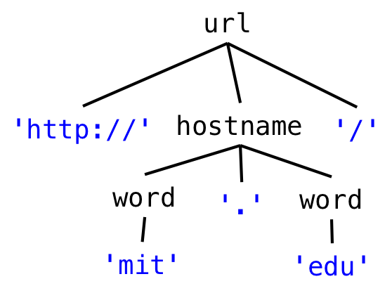
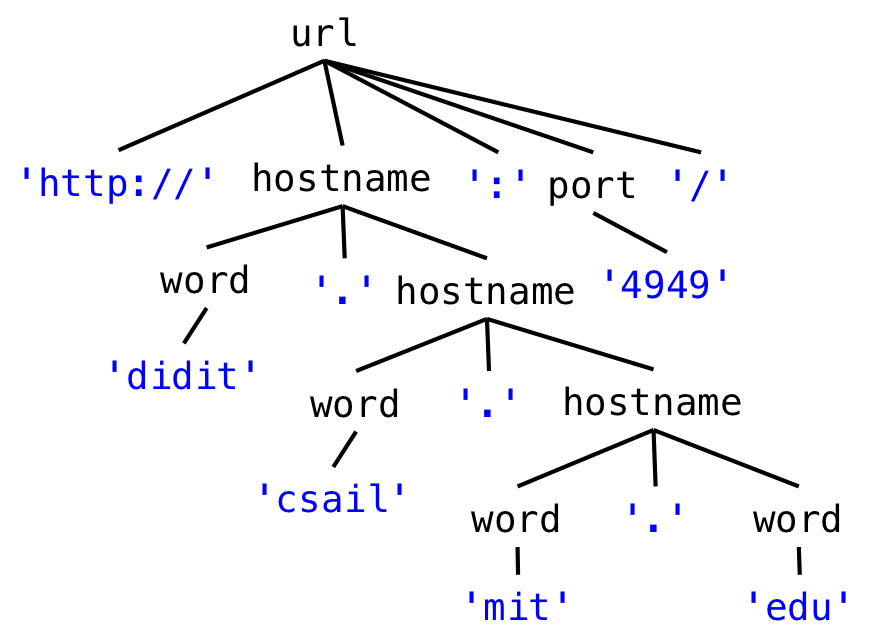
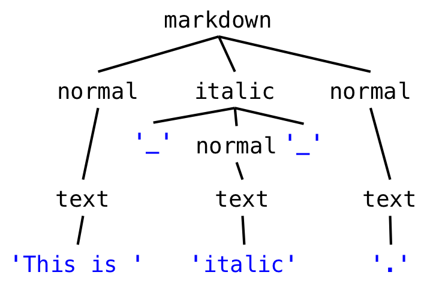
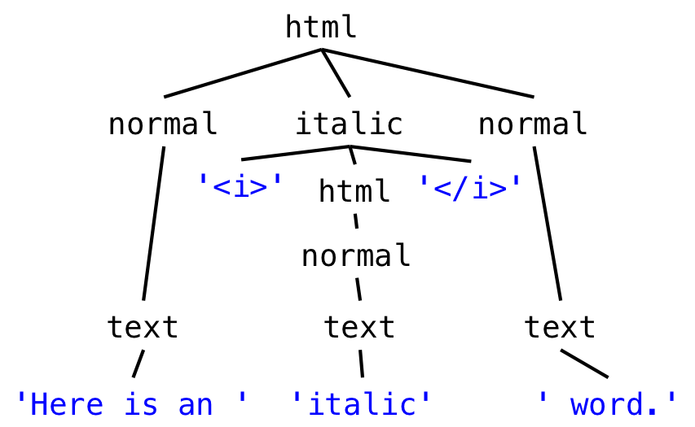
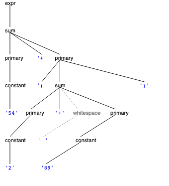
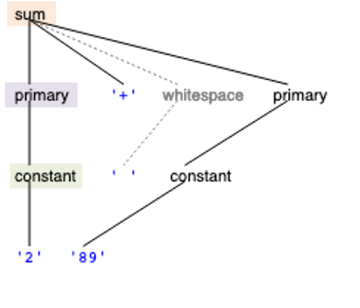
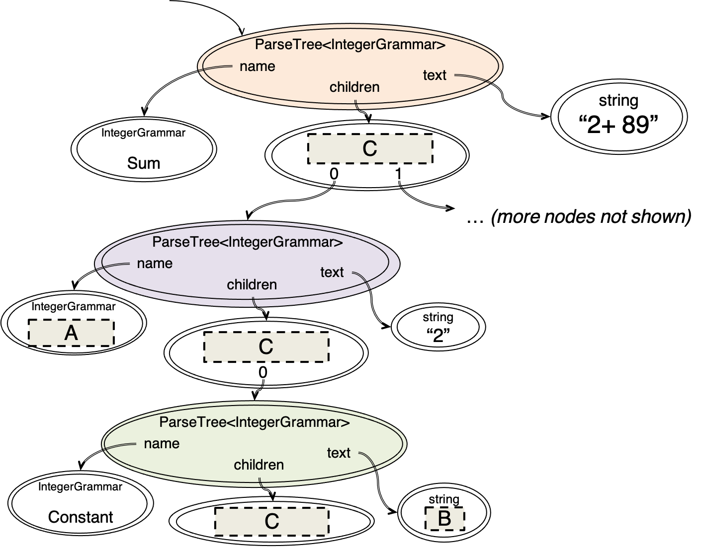

Reading 12: Grammars & Parsing
Software in 6.102
Objectives
After today’s class, you should:
- Understand the ideas of grammar productions and regular expression operators
- Be able to read a grammar or regular expression and determine whether it matches a sequence of characters
- Be able to write a grammar or regular expression to match a set of character sequences
- Be able to use a grammar in combination with a parser generator, to parse a character sequence into a parse tree
- Be able to convert a parse tree into a useful data type
Introduction
Today’s reading introduces several ideas:
- grammars, with productions, nonterminals, terminals, and operators
- regular expressions
- parser generators
Some program modules take input or produce output in the form of a sequence of bytes or a sequence of characters, which is called a string when it’s simply stored in memory, or a stream when it flows into or out of a module. Much like the methods we’ve been developing that have multiple clients and implementations, there are many different users depending on a shared understanding of what format these strings or streams take; in other words, a specification is needed for these sequences. In today’s reading, we talk about how to write a specification for such a sequence. Concretely, a sequence of bytes or characters might be:
- A string
- A file on disk, in which case the specification is called the file format
- Messages sent over a network, in which case the specification is a wire protocol
- A command typed by the user on the console, in which case the specification is a command line interface
For these kinds of sequences, we introduce the notion of a grammar, which allows us not only to distinguish between legal and illegal sequences, but also to parse a sequence into a data structure that a program can work with. The data structure produced from a grammar will often be a recursive data type like we talked about in the recursive data types reading.
We also talk about a specialized form of a grammar called a regular expression. In addition to being used for specification and parsing, regular expressions are a widely-used tool for many string-processing tasks that need to disassemble a string, extract information from it, or transform it.
Finally we’ll talk about parser generators, a kind of tool that translates a grammar automatically into a parser for that grammar.
Grammars
To describe a string of symbols, whether they are bytes, characters, or some other kind of symbol drawn from a fixed set, we use a compact representation called a grammar.
A grammar defines a set of strings, often known as a language. To introduce grammars, throughout this reading we will explore the grammar that represents URLs. Our grammar for URLs will specify the set of strings that are legal URLs in the HTTP protocol.
There are two main elements of a grammar: terminals and nonterminals.
The literal strings in a grammar are called terminals. They’re called terminals because they can’t be expanded any further.
We generally write terminals in quotes, like 'http' or ':'.
On the other hand, nonterminals can be thought of as variables that could match one of a set of possible strings, and thus could be expanded further. How do we decide what values the nonterminals can assume? Every grammar consists of a set of productions, or rules, where each production defines a nonterminal in terms of other nonterminals, operators, and terminals.
A production in a grammar has the form
nonterminal ::= expression of terminals, nonterminals, and operators One of the nonterminals of the grammar is designated as the root.
By convention we list the production for the root first, to make the grammar easier to understand for humans.
The set of strings that the grammar recognizes are the ones that match the root nonterminal.
This nonterminal is sometimes called root or start or even just S, but in the grammars below we will typically choose more readable names for the root, like url, html, and markdown.
So a grammar that represents a singleton set, allowing only one specific URL, might have just one production defining the nonterminal url, with a terminal on the righthand side:
url ::= 'http://mit.edu/'Grammar operators
Productions can use operators to combine terminals and nonterminals on the righthand side. The three most important operators in a production expression are:
x ::= y* // x matches zero or more yConcatenation, represented not by a symbol, but just a space:
x ::= y z // x matches y followed by z Union, also called alternation, represented by |:
x ::= y | z // x matches either y or z By convention, postfix operators like * have highest precedence, which means they are applied first.
Concatenation is applied next.
Alternation | has lowest precedence, which means it is applied last.
Parentheses can be used to override precedence:
m ::= a (b|c) d // m matches a, followed by either b or c, followed by d
x ::= (y z | a b)* // x matches zero or more yz or ab pairsLet’s use these operators to generalize our url grammar to match some other hostnames, such as http://stanford.edu/ and http://google.com/.
url ::= 'http://' hostname '/'
hostname ::= 'mit.edu' | 'stanford.edu' | 'google.com'The first rule of this grammar demonstrates concatenation.
The url nonterminal matches strings that start with the literal string http://, followed by a match to the hostname nonterminal, followed by the literal string /.
The hostname rule demonstrates union.
A hostname can match one of the three literal strings, mit.edu or stanford.edu or google.com.
So this grammar represents the set of three strings, http://mit.edu/, http://google.com/, and http://stanford.edu/.
Let’s take it one step further by allowing any lowercase word in place of mit, stanford, google, com and edu:
url ::= 'http://' hostname '/'
hostname ::= word '.' word
word ::= letter*
letter ::= ('a' | 'b' | 'c' | 'd' | 'e' | 'f' | 'g' | 'h' | 'i'
| 'j' | 'k' | 'l' | 'm' | 'n' | 'o' | 'p' | 'q'
| 'r' | 's' | 't' | 'u' | 'v' | 'w' | 'x' | 'y' | 'z')The new word rule matches a string of zero or more lowercase letters, so the overall grammar can now match http://alibaba.com/ and http://zyxw.edu/ as well.
Unfortunately word can also match an empty string, so this url grammar also matches http://./, which is not a legal URL.
Here’s a verbose way to fix that, which requires word to match at least one letter.
word ::= letter letter*We’ll see a simpler way to write word in the next section.
reading exercises
root ::= name (' ' name)*
name ::= capitalLetter lowercaseLetter*
capitalLetter ::= ('A' | 'B' | 'C' | 'D' | 'E' | 'F' | 'G' | 'H' | 'I'
| 'J' | 'K' | 'L' | 'M' | 'N' | 'O' | 'P' | 'Q'
| 'R' | 'S' | 'T' | 'U' | 'V' | 'W' | 'X' | 'Y' | 'Z')
lowercaseLetter ::= ('a' | 'b' | 'c' | 'd' | 'e' | 'f' | 'g' | 'h' | 'i'
| 'j' | 'k' | 'l' | 'm' | 'n' | 'o' | 'p' | 'q'
| 'r' | 's' | 't' | 'u' | 'v' | 'w' | 'x' | 'y' | 'z')(missing explanation)
More grammar operators
You can also use additional operators which are just syntactic sugar (i.e., they’re equivalent to combinations of the main three operators).
0 or 1 occurrence is represented by ?:
x ::= y? // an x is a y or is the empty string
// equivalent to x ::= | y
// ^--- note the empty string here1 or more occurrences is represented by +:
x ::= y+ // an x is one or more y
// equivalent to x ::= y y*An exact number of occurrences is represented by {n}, and a range of occurrences by {n,m}, {n,}, or {,m}:
x ::= y{3} // an x is three y
// equivalent to x ::= y y y
x ::= y{1,3} // an x is between one and three y
// equivalent to x ::= y | y y | y y y
x ::= y{,4} // an x is at most four y
// equivalent to x ::= | y | y y | y y y | y y y y
// ^--- note the empty string here
x ::= y{2,} // an x is two or more y
// equivalent to x ::= y y y*A character class [...] represents the set of single-character strings matching any of the characters listed in the square brackets:
x ::= [aeiou] // equivalent to x ::= 'a' | 'e' | 'i' | 'o' | 'u'Ranges of characters can be described compactly using -:
x ::= [a-ckx-z] // equivalent to x ::= 'a' | 'b' | 'c' | 'k' | 'x' | 'y' | 'z'An inverted character class [^...] represents the set of single-character strings matching a character not listed in the brackets:
x ::= [^a-c] // equivalent to x ::= 'd' | 'e' | 'f' | ... | '0' | '1' | ... | '!' | '@'
// | ... (all other possible characters)These additional operators allow the word production to be expressed more compactly:
url ::= 'http://' hostname '/'
hostname ::= word '.' word
word ::= [a-z]+Recursion in grammars
How else do we need to generalize? Hostnames can have more than two components, and there can be an optional port number:
http://didit.csail.mit.edu:4949/To handle this kind of string, the grammar is now:
url ::= 'http://' hostname (':' port)? '/'
hostname ::= word '.' hostname | word '.' word
port ::= [0-9]+
word ::= [a-z]+Notice how hostname is now defined recursively in terms of itself. Which part of the hostname definition is the base case, and which part is the recursive step? What kinds of hostnames are allowed?
Using the repetition operator, we could also write hostname without recursion, like this:
hostname ::= (word '.')+ wordRecursion can sometimes be eliminated from a grammar using operators like this, but not always.
Another thing to observe is that this grammar allows port numbers that are not technically legal, since port numbers can only range from 0 to 65535 (216-1). We could write a more complex definition of port that would match only these integers, but that’s not typically done in a grammar. Instead, the constraint 0 ≤ port ≤ 65535 would be specified in the program that uses the grammar.
There are more things we should do to go further:
- generalizing
httpto support the additional protocols that URLs can have - generalizing the
/at the end to a slash-separated path - allowing hostnames with the full set of legal characters instead of just a-z
reading exercises
Suppose we want the url grammar, which currently only supports http, to also match strings of the form:
https://websis.mit.edu/
ftp://ftp.athena.mit.edu/ptth://web.mit.edu/
mailto:bitdiddle@mit.eduurl ::= protocol '://' hostname (':' port)? '/'
protocol ::= TODO
hostname ::= word '.' hostname | word '.' word
port ::= [0-9]+
word ::= [a-z]+(missing explanation)
Parse trees
Matching a grammar against a string can generate a parse tree that shows how parts of the string correspond to parts of the grammar.
The leaves of the parse tree are labeled with terminals, representing the parts of the string that have been parsed. They don’t have any children, and can’t be expanded any further. If we concatenate the leaves together in order, we get back the original string. A trivial example is the one-line URL grammar that we started with, whose (only possible) parse tree is shown at the right:
url ::= 'http://mit.edu/'The internal nodes of the parse tree are labeled with nonterminals, since they all have children.
The immediate children of a nonterminal node must follow the pattern of the nonterminal’s production rule in the grammar.
For example, in our more elaborate URL grammar that allows any two-part hostname, the children of a hostname node in the tree must follow the pattern of the hostname rule, word '.' word.
The figure on the right shows the parse tree produced by matching this grammar against http://mit.edu/:

url ::= 'http://' hostname '/'
hostname ::= word '.' word
word ::= [a-z]+For a more elaborate example, here is the parse tree for the recursive URL grammar.
The tree has more structure now.
The hostname and word nonterminals are labeling nodes of the tree whose subtrees match those rules in the grammar.

url ::= 'http://' hostname (':' port)? '/'
hostname ::= word '.' hostname | word '.' word
port ::= [0-9]+
word ::= [a-z]+reading exercises
If the same string from the previous exercise was matched against this grammar with a non-recursive hostname rule:
url ::= 'http://' hostname (':' port)? '/'
hostname ::= (word '.')+ word
port ::= [0-9]+
word ::= [a-z]+then how many internal nodes (labeled by nonterminals) would the resulting parse tree have? Hint: try to draw the parse tree on paper before counting.
(missing explanation)
Example: Markdown and HTML
Now let’s look at grammars for some file formats. We’ll be using two different markup languages that represent typographic style in text. Here they are:
This is _italic_.(To learn about Markdown, see the Markdown syntax documentation or Markdown on Wikipedia.)
Here is an <i>italic</i> word.(To learn about HTML, see the HTML Living Standard, or HTML on Wikipedia.)
For simplicity, our example HTML and Markdown grammars will only specify italics, but other text styles are of course possible.
Also for simplicity, we will assume the plain text between the formatting delimiters isn’t allowed to use any formatting punctuation, like _ or <.

Here’s the grammar for our simplified version of Markdown:
markdown ::= ( normal | italic ) *
italic ::= '_' normal '_'
normal ::= text
text ::= [^_]*
Here’s the grammar for our simplified version of HTML:
html ::= ( normal | italic ) *
italic ::= '<i>' html '</i>'
normal ::= text
text ::= [^<>]*reading exercises
Look at the markdown and html grammars above, and compare their italic productions. Notice that not only do they differ in delimiters (_ in one case, < > tags in the other), but also in the nonterminal that is matched between those delimiters. One grammar is recursive; the other grammar is not.
For each string below, if you match the specified grammar against it, which letters are inside matches to the italic nonterminal? In other words, which letters would be italicized?
(missing explanation)
(missing explanation)
Regular expressions
A regular grammar has a special property: by substituting every nonterminal (except the root one) with its righthand side, you can reduce it down to a single production for the root, with only terminals and operators on the right-hand side.
Our URL grammar is regular. By replacing nonterminals with their productions, it can be reduced to a single expression:
url ::= 'http://' ([a-z]+ '.')+ [a-z]+ (':' [0-9]+)? '/' The Markdown grammar is also regular:
markdown ::= ([^_]* | '_' [^_]* '_' )*But our HTML grammar can’t be reduced completely. By substituting righthand sides for nonterminals, you can eventually reduce it to something like this:
html ::= ( [^<>]* | '<i>' html '</i>' )*Unfortunately, the recursive use of html on the righthand side can’t be eliminated, and can’t be simply replaced by a repetition operator either. So the HTML grammar is not regular.
The reduced expression of terminals and operators can be written in an even more compact form, called a regular expression. A regular expression does away with the quotes around the terminals, and the spaces between terminals and operators, so that it consists just of terminal characters, parentheses for grouping, and operator characters.
For example, the regular expression for our markdown format is just
([^_]*|_[^_]*_)*Regular expressions are also called regexes for short. A regex is far less readable than the original grammar, because it lacks the nonterminal names that documented the meaning of each subexpression. But many programming languages have library support for regexes (and not for grammars), and regexes are much faster to match than a grammar.
The regex syntax commonly implemented in programming language libraries has a few more special characters, in addition to the ones we used above in grammars. Here are some common useful ones:
. // matches any single character (but sometimes excluding newline, depending on the regex library)
\d // matches any digit, same as [0-9]
\s // matches any whitespace character, including space, tab, newline
\w // matches any word character including underscore, same as [a-zA-Z_0-9]Backslash is also used to “escape” an operator or special character so that it matches literally. Here are some of the common special characters that you need to escape:
\. \( \) \* \+ \| \[ \] \\Using backslashes is important whenever there are terminal characters that would be confused with special characters.
Because our url regular expression has . in it as a terminal, we need to use a backslash to escape it:
http://([a-z]+\.)+[a-z]+(:[0-9]+)?/Another way to escape a special character is to wrap it in character-class brackets.
Instead of \., we could also write [.] to match just the literal . character.
Inside character-class brackets, most special characters lose their special meaning, and are simply treated literally.
But characters that are special to the character-class syntax, like [, ], ^, -, and \, still need to be escaped by a backslash to be used literally.
Finally, while we are on the subject of backslashes, regular expressions can also contain standard string escape characters, like these codes that are used to represent otherwise-invisible characters:
\n // matches a literal newline character
\t // matches a literal tab characterThese are the same escape characters that can be used in Python or TypeScript/JavaScript strings, and they mean a match to a single literal character, the same as if you put in A to match an uppercase A, or (space) to match a single space character.
So be careful: backslash is heavily overloaded here! It is used for three different purposes in a regular expression: in a character-class shortcut (like \s); to match a special character literally (like \.); and in a string escape character (like \n).
reading exercises
To get some practice with reading a regular expression (i.e., deciding what strings the regular expression matches), let’s do some regex crosswords!
Two warnings before you start:
- The Regex Crossword site does not use your MIT login. You do not need to create an account on this site or log in to do the puzzles. Ignore the warning that progress will not be saved without logging in.
- Some of the puzzles use the backreference
\1syntax. This reading doesn’t talk about the\1backreference syntax because it’s rarely used. The crossword site’s tutorial includes\1, but we will tell you to skip the other puzzles that use it.
First, read how to play.
Then, do the five Tutorial puzzles.
Now do the Beginner puzzles, specifically:
- Beatles
- (skip Naughty and Ghost because they have
\1in them) - Symbolism
- Airstrip One
Finally do the Intermediate puzzles, specifically:
- Always remember
- Johnny
- skip Earth because of
\1 - Encyclopedia
- skip Technology because of
\1
If you enjoyed these puzzles, here are more regex crosswords:
reading exercises
Now let’s practice writing some regular expressions. The Regex 101 site allows you to write a regular expression and see what it matches and doesn’t match in a set of test cases.
Regex 101 does not use your MIT login, and you do not need to create an account on this site or log in into it in order to do the puzzles below.
First, try this warmup.
The desired regular expression should be a literal string with no special regular expression operators in it.
reading exercises
In most libraries that use regular expressions, the any-character pattern . is not allowed to match a newline character. Consider this string containing a newline in the middle: "AB\nCD", which looks like this when printed:
AB
CDWhich of the following regexes match this string, using the default meaning of .?
(missing explanation)
Using regular expressions in practice
Regexes are widely used in programming, and you should have them in your toolbox.
In TypeScript/JavaScript, you can use regexes for manipulating strings (see Mozilla’s guide). They’re built-in as a first-class feature of other modern scripting languages like Python and Ruby, and you can use them in many text editors for find and replace.
In some languages (including TypeScript/JavaScript), regexes have their own literal syntax delimited by forward slashes, /..../.
In others (including Python and Java), there is no special syntactic support for regexes, so you just use a quoted string.
Here are some examples of using regexes in TypeScript.
Replace all runs of spaces in a string s with a single space:
const singleSpacedString = s.replace(/ +/g, " ");Notice the g character in the example above.
By default, a regex will only match the first instance in a string.
Adding a g character after the regex makes this a “global” pattern which forces it to match all instances in the string.
if (s.match(/http:\/\/([a-z]+\.)+[a-z]+(:[0-9]+)?\//)) {
// then s is a url
}Notice the backslashes in the example above.
We want to match a literal period ., so we have to first escape it as \. to protect it from being interpreted as the regex match-any-character operator.
Furthermore, we want to match literal forward slashes /, so we also have to escape them as \/ to prevent them from prematurely signalling the end of the regex literal.
The frequent necessity for backslash escapes makes regexes less readable.
Extract parts of a date like "2020-03-18":
const s = "2020-03-18";
const regex = /(?<year>\d{4})-(?<month>\d{2})-(?<day>\d{2})/;
const m = s.match(regex);
if (m) {
assert(m.groups);
const year = m.groups.year;
const month = m.groups.month;
const day = m.groups.day;
// m.groups.name is the part of s that matched (?<name>...)
}This example uses named capturing groups like (?<year>...) to extract parts of the matched string and assign them names.
The (?<name>...) syntax matches the regex ... inside the parentheses, and then assigns name to the string that match.
Note that ? here does not mean 0 or 1 repetition.
In this context, right after an open parenthesis, the ? signals that these parentheses have special meaning, not just grouping.
Named capturing groups can be retrieved by the groups property after a successful match.
If this regex were matched against "2026-03-18", for example, then m.groups.year would return "2026", m.groups.month would return "03", and m.groups.day would return "18".
reading exercises
Write the shortest regex you can to remove single-word, lowercase-letter-only HTML tags from a string:
const input = "The <b>Good</b>, the <i>Bad</i>, and the <strong>Ugly</strong>";
const regex = /TODO/g;
const output = input.replace(regex, "");The desired output for that example is "The Good, the Bad, and the Ugly".
What is the shortest regex that you can put in place of TODO, to match any single-word, lowercase-letter-only HTML tag, not just the ones in this particular input string?
You may find it useful to try your answer here.
(missing explanation)
Consider this snippet of code that matches a street address:
const input = "77 Rose Court Ln";
const regex = /[0-9]+ .* (Rd|St|Ave|Ln)/;
const m = input.match(regex);
if (m) {
...
}We want to not only match the street address, but also parse it into pieces.
Insert named capturing groups in the regular expression regex so that we could extract these pieces after successfully matching m:
const houseNumber = m.groups.houseNumber; // should be "77"
const streetName = m.groups.streetName; // should be "Rose Court"
const streetType = m.groups.streetType; // should be "Ln"Start with the original regular expression [0-9]+ .* (Rd|St|Ave|Ln), already filled in below, and just put correctly-named parentheses around the parts of the expression that correspond to the pieces that need to be extracted.
Take care with the spaces, because spaces have meaning in a regex.
You may find it useful to try your answer here.
(missing explanation)
Context-free grammars
In general, a language that can be expressed with our system of grammars is called context-free. Not all context-free languages are also regular; that is, some grammars can’t be reduced to single nonrecursive productions. Our HTML grammar is context-free but not regular.
The grammars for most programming languages are also context-free. In general, any language with nested structure (like nesting parentheses or braces) is context-free but not regular. That description applies to the TypeScript grammar, shown here in part:
statement ::=
'{' statement* '}'
| 'if' '(' expression ')' statement ('else' statement)?
| 'for' '(' forinit? ';' expression? ';' forupdate? ')' statement
| 'while' '(' expression ')' statement
| 'do' statement 'while' '(' expression ')' ';'
| 'try' '{' statement* '}' ( catches | catches? 'finally' '{' statement* '}' )
| 'switch' '(' expression ')' '{' switchgroups '}'
| 'return' expression? ';'
| 'throw' expression ';'
| 'break' label? ';'
| 'continue' label? ';'
| expression ';'
| label ':' statement
| ';'Taking stock
- grammars, which describe groups of strings using a production of the form
nonterminal ::= expression of terminals, nonterminals, and operators- grammars make use of operators; the three most important ones are
a * b(repetition),a b(concatenation), anda | b(union) - grammars help differentiate between meaningful strings and nonmeaningful strings; for example, a properly formatted URL will match our url grammar, but a file-system path will not
- grammars make use of operators; the three most important ones are
- parse trees, which diagram how a concrete string matches a grammar
- parse trees will come in handy when designing software to automatically match strings to a grammar in useful ways, which we will see in the next section
- regular expressions, or regexes, a compact version of regular grammars
- regexes have a rich history in computer science; they are widely used throughout the full stack and across many languages
- TypeScript/JavaScript (like many languages) has built-in support for regexes, which includes named capturing groups for meaningfully handling matches
- regex101.com is a great site to experiment with regular expressions
The last part of this reading introduces the idea of a parser generator, which automates the process of parsing with a grammar.
Parser generators
A parser generator is a good tool that you should add to your toolbox. A parser generator takes a grammar as input and automatically generates a parser, which takes a sequence of characters and tries to match the sequence against the grammar.
The parser typically produces a parse tree, which shows how grammar productions are expanded into a sentence that matches the character sequence. The root of the parse tree is the root nonterminal of the grammar. Each node of the parse tree expands into one production of the grammar. We’ll see how a parse tree actually looks later in this reading.
The final step of parsing is to do something useful with this parse tree. We are going to translate it into a value of a recursive data type. Recursive abstract data types are often used to represent expressions in a language, like HTML, Markdown, TypeScript, or algebraic expressions (the symbolic language of algebra). A recursive abstract data type that represents a language expression is called an abstract syntax tree (AST).
In 6.102, we are going to use ParserLib, a parser generator for TypeScript developed by the course staff. The parser generator is similar in spirit to more widely used parser generators like Antlr, but it has a simpler interface and is generally easier to use.
A ParserLib grammar
Documentation for ParserLib can be found online.
Here is what our HTML grammar looks like as a ParserLib grammar:
html ::= ( italic | normal ) * ;
italic ::= '<i>' html '</i>' ;
normal ::= text ;
text ::= [^<>]+ ; /* represents a string of one or more characters that are not < or > */Each ParserLib rule consists of a name, followed by a ::=, followed by its definition, terminated by a semicolon. The ParserLib grammar can also include TypeScript-style comments, both single line and multiline.
By convention, we use lowercase for nonterminals: html, normal, italic, text.
The ParserLib library is case-insensitive with respect to nonterminal names; it canonicalizes names to all-lowercase, so even if you don’t write all your names into lowercase, you will see them as lowercase when you print your grammar.
Terminals are quoted strings, like '<i>', or more generally regular expressions, like [^<>]+.
Unlike normal regular expressions, however, ParserLib syntax requires literal characters to be either quoted or enclosed in character-class brackets.
Thus the regex (alpha|beta|[c-z])* is written as ('alpha'|'beta'|[c-z])* in ParserLib syntax.
html ::= ( italic | normal ) * ;This rule shows that ParserLib rules can have the alternation operator |, repetition operators like * (and also + and ?, even though they’re not shown in this rule), and parentheses for grouping, in the same way we’ve been using in the grammars section.
Whitespace in a grammar is not significant (outside of quoted strings or [...] character classes).
Here the operators have been surrounded by spaces to make them more visible.
Writing the rule as html::=(italic|normal)*; would have the same effect, just with less readability.
The html nonterminal also happens to be the root of this grammar (also called starting symbol).
The root is the nonterminal that the whole input needs to match.
It’s good practice to put the rule for the root nonterminal first in the grammar, so that a human reader can take a top-down view, but it isn’t essential.
When we create a parser from the grammar, we tell ParserLib which nonterminal the parse should use as the root.
italic ::= '<i>' html '</i>' ;
normal ::= text ;
text ::= [^<>]+ ;Note that the text production uses the inverted character class [^<>], discussed in the grammars section, to represent any character except < and >.
Whitespace
Consider the grammar shown below.
expr ::= sum ;
sum ::= primary ('+' primary)* ;
primary ::= constant | '(' sum ')' ;
constant ::= [0-9]+ ;This grammar will accept an expression like 42+2+5, but will reject a similar expression that has any spaces between the constants and the + signs. We could modify the grammar to allow whitespace around the plus sign by modifying the production rule for sum like this:
sum ::= primary (whitespace* '+' whitespace* primary)* ;
whitespace ::= [ \t\r\n]+ ;However, this can become cumbersome very quickly once the grammar becomes more complicated. ParserLib allows a shorthand to indicate that certain kinds of characters should be skipped.
// the IntegerExpression grammar
@skip whitespace {
expr ::= sum ;
sum ::= primary ('+' primary)* ;
primary ::= constant | '(' sum ')' ;
}
whitespace ::= [ \t\r\n]+ ;
constant ::= [0-9]+ ;The @skip whitespace notation indicates that zero or more matches to the whitespace nonterminal should be automatically ignored, before and after each terminal, nonterminal, and character class on the righthand side of expr, sum, and primary.
So from the point of view of grammar matching, these three rules effectively become:
expr ::= whitespace* sum whitespace* ;
sum ::= whitespace* primary whitespace* (whitespace* '+' whitespace* primary whitespace*)* whitespace* ;
primary ::= whitespace* constant whitespace* | whitespace* '(' whitespace* sum whitespace* ')' whitespace* ;Several things are important to note about @skip.
First, there is nothing special about whitespace. The @skip directive works with any nonterminal defined in the grammar – so you could @skip punctuation or @skip spacesAndComments instead, by defining appropriate rules for those nonterminals.
Second, note how the definition of constant was intentionally placed outside the @skip block.
This is because we want to accept expressions with extra space around a constant, like 42 + 2, but we want to reject spaces within constants, like 4 2 + 2.
Putting the constant rule inside the @skip block would cause it to effectively become constant ::= (whitespace* [0-9] whitespace*)+, so it would accept constants with spaces inside them.
Putting the rule for primary inside the @skip block – so that its use of constant can be surrounded by whitespace – but keeping the rule for constant outside, provides the desired behavior.
reading exercises
Consider this simple grammar, which has semester as its root nonterminal:
@skip spaces {
semester ::= season year ;
season ::= 'Fall' | 'Spring' ;
year ::= [0-9] [0-9] ;
}
spaces ::= ' '+ ;Which of the following strings are matched by this grammar (where ␣ indicates a space in the string)?
(missing explanation)
Now suppose the grammar is instead:
@skip spaces {
semester ::= season year ;
}
season ::= 'Fall' | 'Spring' ;
year ::= [0-9] [0-9] ;
spaces ::= ' '+ ;The rules are still the same, but @skip spaces only wraps around the semester rule.
Which of these strings match the new grammar?
(missing explanation)
Generating the parser
The code for the examples that follow is downloadable as ex12-intexpr.
Download the project, run npm install, open in VS Code, and use npm run start to try your own modifications.
Refer to the documentation for ParserLib online.
The rest of this reading will use as a running example the IntegerExpression grammar that we defined in the previous section. In order to embed the grammar in TypeScript with its newlines intact, we will use backquotes (also called a template literal):
const grammar: string = `
@skip whitespace {
expr ::= sum;
sum ::= primary ('+' primary)*;
primary ::= constant | '(' sum ')';
}
constant ::= [0-9]+;
whitespace ::= [ \\t\\r\\n]+; // <-- note that backslashes must be escaped here, because this regex is inside a string
`;The ParserLib parser generator tool converts a grammar string like this into a parser. In order to do this, you need to follow three steps. First, you need to import the ParserLib library:
import { Parser, ParseTree, compile } from "parserlib";The second step is to define an enum type that contains all the nonterminals used by your grammar. This will tell ParserLib which definitions to expect in the grammar and will allow it to check for any missing ones.
parser.ts
enum IntegerGrammar {
Expr, Sum, Primary, Constant, Whitespace
}Note that ParserLib itself is case insensitive, but by convention, the names of enum values are capitalized.
From within your code, you can create a Parser by calling its compile factory function.
parser.ts
const parser: Parser<IntegerGrammar> = compile(grammar, IntegerGrammar, IntegerGrammar.Expr);The compile method takes a grammar string, the nonterminal enumeration, and the nonterminal to use as the root nonterminal of the grammar.
In this case, the root nonterminal we want is expr, so we pass IntegerGrammar.Expr.
Assuming you don’t have any syntax errors in your grammar, the result will be a Parser object that can be used to parse text. Notice that the Parser is a generic type that is parameterized by the IntegerGrammar enum that you defined earlier.
Calling the parser

Now that you’ve generated the parser object, you are ready to parse your own text. The parser has a method called parse that takes in the text to be parsed as a string, and returns a ParseTree.
Calling it produces a parse tree:
const parseTree: ParseTree<IntegerGrammar> = parser.parse("54+(2+ 89)");Note that the ParseTree is also a generic type that is parameterized by the enum type IntegerGrammar.
For debugging, we can then print this tree out:
console.log(parseTree.toString());You can also try calling the function visualizeAsUrl(tree) which will provide you with a URL which you can copy and paste to your browser to view the visualization.
See the corresponding code in parser.ts.
Traversing the parse tree
So we’ve used the parser to turn a stream of characters into a parse tree, which shows how the grammar matches the stream. Next we want to do something useful with this parse tree: translating it into a value of a recursive abstract data type.
Like the Parser itself, the ParseTree is parameterized by the type NT, an enum type that lists all the nonterminals in the grammar, like the IntegerGrammar enumeration we defined earlier.
The first step is to learn how to traverse the parse tree.
The ParseTree object has four methods that you need to be most familiar with.
Three of them are fundamental observers, represented as getter properties:
interface ParseTree<NT> {
/**
* The nonterminal corresponding to this node in the parse tree.
*/
name: NT;
/**
* The children of this node, in order, excluding @skipped subtrees
*/
children: ReadonlyArray<ParseTree<NT>>;
/**
* The substring of the original string that this subtree matched
*/
text: string;Additionally, you can query the ParseTree for all children that match a particular production rule:
/**
* Get the children that correspond to a particular production rule
* @param name Name of the nonterminal corresponding to the desired production rule.
* @returns children that represent matches of name's production rule.
*/
public childrenByName(name: NT): ReadonlyArray<ParseTree<NT>>;
}A good way to visit the nodes in a parse tree is to write a recursive function. For example, the recursive function below prints all nodes in the parse tree with proper indentation.
/**
* Traverse a parse tree, indenting to make it easier to read.
* @param node parse tree to print.
* @param indent indentation to use.
*/
function printNodes(node: ParseTree<IntegerGrammar>, indent: string): void {
console.log(indent + node.name + ":" + node.text);
for (const child of node.children){
printNodes(child, indent + " ");
}
}Running this function on the parse tree for 54+(2+ 89) produces the output below.
For reference, the grammar and the visualized parse tree are shown at right.
reading exercises
(missing explanation)
(missing explanation)
(missing explanation)
(missing explanation)
(missing explanation)
(missing explanation)


Let’s see how a ParserLib parse tree looks as a snapshot diagram, because it’s closer to how we will think about it and work with it in TypeScript code.
The partial snapshot diagram at the right corresponds to part of the IntegerGrammar parse tree for "2+ 89", also shown.
The snapshot diagram shows the three correspondingly-colored nodes along the left branch of the parse tree: sum, primary, and constant.
Fill in the gray rectangles in the snapshot diagram.
(missing explanation)
(missing explanation)
(missing explanation)
Constructing an abstract syntax tree
We need to convert the parse tree into a recursive data type. Here’s the definition of the recursive data type that we’re going to use to represent integer arithmetic expressions:
IntegerExpression = Constant(n: number)
+ Plus(left: IntegerExpression, right: IntegerExpression)If this syntax is mysterious, review recursive data type definitions.
When a recursive data type represents a language this way, it is often called an abstract syntax tree. An IntegerExpression value captures the important features of the expression – its grouping and the integers in it – while omitting unnecessary details of the sequence of characters that created it.
By contrast, the parse tree that we just generated with the IntegerExpression parser is a concrete syntax tree.
It’s called concrete, rather than abstract, because it contains more details about how the expression is represented in actual characters. For example, the strings 2+2, ((2)+(2)), and 0002+0002 would each produce a different concrete syntax tree, but these trees would all correspond to the same abstract IntegerExpression value: Plus(Constant(2), Constant(2)).
Now, we can create a recursive function that walks the ParseTree to produce an IntegerExpression as follows:
parser.ts
/**
* Convert a parse tree into an abstract syntax tree.
*
* @param parseTree constructed according to the IntegerExpression grammar
* @returns abstract syntax tree corresponding to parseTree
*/
function makeAbstractSyntaxTree(parseTree: ParseTree<IntegerGrammar>): IntegerExpression {
if (parseTree.name === IntegerGrammar.Expr) {
// expr ::= sum;
return makeAbstractSyntaxTree(parseTree.children[0] ?? assert.fail('missing child'));
} else if (parseTree.name === IntegerGrammar.Sum) {
// sum ::= primary ('+' primary)*;
const children = parseTree.childrenByName(IntegerGrammar.Primary);
const subexprs = children.map(makeAbstractSyntaxTree);
const expression: IntegerExpression = subexprs.reduce((result, subexpr) => new Plus(result, subexpr));
return expression;
} else if (parseTree.name === IntegerGrammar.Primary) {
// primary ::= constant | '(' sum ')';
const child: ParseTree<IntegerGrammar> = parseTree.children[0] ?? assert.fail('missing child');
// check which alternative (constant or sum) was actually matched
switch (child.name) {
case IntegerGrammar.Constant:
return makeAbstractSyntaxTree(child);
case IntegerGrammar.Sum:
return makeAbstractSyntaxTree(child);
// for this parser, we do the same thing either way (and should really DRY this out)
default:
assert.fail(`Primary node unexpected child ${IntegerGrammar[child.name]}`);
}
} else if (parseTree.name === IntegerGrammar.Constant) {
// constant ::= [0-9]+;
const n: number = parseInt(parseTree.text);
return new Constant(n);
} else {
assert.fail(`cannot make AST for ${IntegerGrammar[parseTree.name]} node`);
}
}The function follows the structure of the grammar, handling each rule from the grammar in turn: expr, sum, primary, and constant.
The only rule we don’t need to handle here is whitespace, because the grammar uses whitespace only in a @skip block, and skipped subtrees are not returned by children so they should never appear in the traversal.
Note, however, that skipped whitespace will still appear in the text field of a matched nonterminal.
Note that this code is tied very closely to the grammar. If you change the rules of the grammar in a significant way, this code will likely need to change too.
For sum nodes, the code uses map and reduce to avoid writing loops (and notice that parseTree.childrenByName is identical to performing a filter on parseTree.children).
To handle primary nodes, this code uses a switch statement.
Any time you use switch, remember: the execution of a switch statement starts at the matching case and falls through to subsequent cases.
Our code here is careful to return (or raise an error) in every case, never falling through.
reading exercises
In the code we’re looking at, the Plus operator in the abstract syntax tree is binary.
It represents the sum of exactly two expressions, a lefthand side and a righthand side.
Its corresponding grammar rule sum ::= primary ('+' primary)* is n-ary.
It matches the sum of n primary expressions, where n ≥ 1.
As a result, a Sum node in the parse tree may have one or more Primary children, not just two.
Part of the complexity of the Sum case of makeAbstractSyntaxTree() comes from translating an n-ary node into binary nodes.
If we wanted the Sum node to be (at most) binary instead, which of the following grammar rules would do it correctly?
(missing explanation)
@skip spaces {
date ::= monthname day ',' year | day '/' monthnum '/' year ;
}
monthname ::= 'January' | 'February' ;
monthnum ::= [0-9]+ ;
day ::= [0-9]+ ;
year ::= [0-9]+ ;
spaces ::= ' '+ ;…what values would you need to have in the enumeration type passed to ParserLib?
Specifically, when you define enum DateGrammar { ... } and call compile(), what values should appear in the ... of the enum?
(missing explanation)
Consider this grammar, which is designed to match a list of numbers like 5,-8,3:
@skip spaces {
list ::= int (',' list)? ;
}
int ::= '-'? [0-9]+ ;
spaces ::= ' '+ ;Fill in the blanks of this function that converts a ParseTree for this grammar into a List.
enum ListGrammar { List, Int, Spaces }
function makeList(parseTree: ParseTree<ListGrammar>): Array<number> {
switch (parseTree.name) {
case ListGrammar.List:
const list: Array<number> = [];
const intChild: ParseTree<ListGrammar>|undefined = parseTree.children[0];
const listChild: ParseTree<ListGrammar>|undefined = parseTree.children[1];
assert(intChild);
list.push(parseInt(▶▶A◀◀));
if (▶▶B◀◀) {
list = list.concat(▶▶C◀◀);
}
return list;
default:
throw new Error("should never get here");
}
}(missing explanation)
Consider this grammar, with semester as its root nonterminal:
@skip spaces {
semester ::= season year ;
season ::= 'Fall' | 'Spring' ;
}
year ::= [0-9] [0-9] ;
spaces ::= ' '+ ;Suppose ParserLib is used to produce a parse tree, and you are writing code to convert the parse tree into abstract data types representing semesters and seasons. Here is part of that code intended to handle just the season node of the tree:
// nonterminals in the grammar
enum SemesterGrammar { Semester, Season, Year, Spaces }
// abstract data type representing a season of the year
enum Season { Fall, Spring, Winter, Summer }
/**
* @param node must be a match to the season rule
* @returns corresponding Season value
*/
function convertToSeason(node: ParseTree<SemesterGrammar>): Season {
assert.equal(node.name, SemesterGrammar.Season);
return ▶▶A◀◀ ? Season.Fall : Season.Spring;
}What is the simplest correct code for ▶▶A◀◀?
(You may want to look at the spec of ParseTree, specifically ParseTree.text.)
(missing explanation)
Now suppose the grammar is instead:
@skip spaces {
semester ::= season year ;
}
season ::= 'Fall' | 'Spring' ;
year ::= [0-9] [0-9] ;
spaces ::= ' '+ ;In the same line of code in the previous exercise:
return ▶▶A◀◀ ? Season.Fall : Season.Spring;…what is now the simplest correct code for ▶▶A◀◀?
(missing explanation)
Handling errors
Several things can go wrong when parsing.
Your grammar may have a syntax error in it.
In this case, compile will throw a ParseError.
The string you are trying to parse may not be parseable with your given grammar.
This might happen because your grammar is incorrect, or because your string is incorrect.
Either way, the problem will be signaled by the parse method throwing an ParseError.
The ParseError error contains some information about the possible location of the error, although parse errors are sometimes inherently difficult to localize, since the parser cannot know what string you intended to write, so you may need to search a little to find the true location of the error.
Left recursion and other ParserLib limitations
ParserLib works by generating a top-down recursive descent parser. These kind of parsers have a few limitations in terms of the grammars that they can parse. There are two in particular that are worth pointing out.
Left recursion. A recursive descent parser can go into an infinite loop if the grammar involves left recursion. This is a case where a definition for a nonterminal involves that nonterminal as its leftmost symbol. For example, the grammar below includes left recursion because one of the possible definitions of sum is sum '+' number which has sum as its leftmost symbol.
sum ::= number | sum '+' number ;
number ::= [0-9]+ ;This left-recursive definition is problematic because the recursive descent parser needs to try matching all alternatives for sum, both number and sum '+' number.
But trying to match sum '+' number immediately requires matching sum as its first step.
The parser keeps trying the rule recursively but never makes any progress through the string being parsed – not reducing to a smaller subproblem as correct recursion requires to terminate.
By contrast, a rule like expr = number | '(' expr ')', which is recursive but not left-recursive, is able to make progress through the string by matching ( before recursively applying the expr rule again.
Left recursion can also happen indirectly. For example, changing the grammar above to the one below does not address the problem because the definition of sum still indirectly involves a symbol that has sum as its first symbol.
sum ::= number | thing number ;
thing ::= sum '+' ;
number ::= [0-9]+ ;If you give any of these grammars to ParserLib and then try to use them to parse a symbol, ParserLib will fail with a ParseError listing the offending nonterminal.
There are some general techniques to eliminate left recursion; for our purposes, the simplest approach will be to replace left recursion with repetition (*), so the grammar above becomes:
sum ::= (number '+')* number ;
number ::= [0-9]+ ;Greediness. This is an issue that you may not run into in this class, but it is a limitation of ParserLib you should be aware of. The ParserLib parsers are greedy in that at every point they try to match a maximal string for any rule they are currently considering. For example, consider the following grammar:
g ::= ab threeb ;
ab ::= 'a'*'b'* ;
threeb ::= 'bbb' ;The string 'aaaabbb' clearly should match g, but a greedy parser cannot parse it because it will try to parse a maximal substring that matches the ab symbol, and then it will find that it cannot parse threeb because it has already consumed the entire string. Unlike left recursion, which is easy to fix, this is a more fundamental limitation of the type of parser implemented by ParserLib.
Summary
Machine-processed textual languages are ubiquitous in computer science. Grammars are the most popular formalism for describing such languages, and regular expressions are an important subclass of grammars that can be expressed without recursion.
The topics of today’s reading connect to our three properties of good software as follows:
Safe from bugs. Grammars and regular expressions are declarative specifications for strings and streams, which can be used directly by libraries and tools. These specifications are often simpler, more direct, and less likely to be buggy than parsing code written by hand.
Easy to understand. A grammar captures the shape of a sequence in a form that is easier to understand than hand-written parsing code. Regular expressions, alas, are often not easy to understand, because they are a one-line reduced form of what might have been a more understandable regular grammar.
Ready for change. A grammar can be easily edited, but regular expressions, unfortunately, are much harder to change, because a complex regular expression is cryptic and hard to understand.